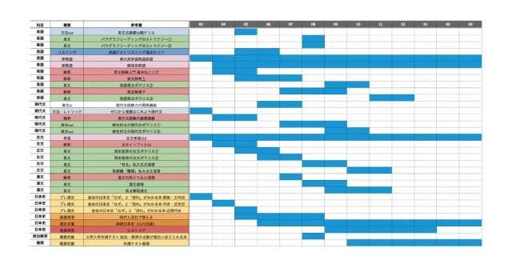
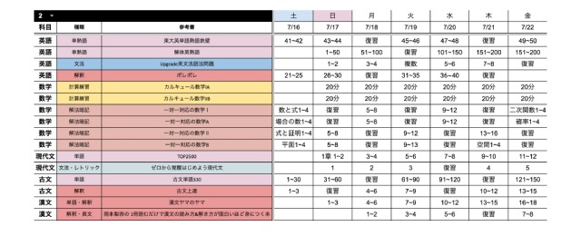

授業がありません
塾経営と聞くと… 科目ごとに 先生を集めて、 志望校に合わせて 授業を組む…。 大学受験の塾って、 準備だけでも大変そう。
現論会は週1回のコーチングに集約 現論会には、授業のための 講師集めも、 時間割・カリキュラム づくりもありません。 生徒が教室に来るのは、 週1回の コーチング だけです。
フランチャイズ加盟店募集
教室に
生徒8名で
スタディサプリの
監修する、
2018年に
いまは
授業も、
オーナーに
教室長の
日々の
教室長
本部の
コーチ
開校時は
教室に
だから、
教室は
そして、
これには
講師も
生徒8名で、
教室の
SPACE / 坪数
12〜20坪
小さな
STAFF / 人件費
週1回の
常駐スタッフを
| 費用項目 | 一般的な 個別指導塾30坪・ブース10席 | 現論会12〜20坪 |
|---|---|---|
| 家賃 | 30万円 | 20万円 |
| 指導する の | 講師45万円 | コーチ生徒数に 応じて |
| 教室長の 人件費 | 正社員38万円 | 生徒8名時4.8万円 |
| 水道光熱・ 通信費 | 3万円 | 2万円 |
| 集客 広告費 | 15万円 | 7.5万円 |
| 本部 分担金 | ー | 2年目から |
| 月額費用 合計 | 131万円 | 37.1万円※ |
※37.1万円は、
個別指導塾は、
現論会は、
一般的な
生徒が
シフトは
現論会
担当する
人件費も
一般的な
40名
現論会
8名
※比較用モデルの
370,740円÷48,208円
→8名
ここを
粗利は、
※借入返済・税金等を
生徒1人・90分×月4回での
| 比較項目 | 一般的な 個別指導塾 | 現論会 |
|---|---|---|
| 対応する 範囲 | 1科目分 | 生徒1人分 |
| 売上 | 15,000円 | 66,000円 |
| 売上の | 1.0倍 | 4.4倍 |
個別指導塾は
勉強の


解説
授業を
生徒が
どちらも、
予備校側の
1年で
これが
最も
開校から
34教室
これまでに
※対象期間：2021年1月〜2026年8月
現論会の
約70%
会社員など、
本業を
教室を
※別事業との
開校費用の
まず、
500〜660万円
加盟金・物件取得・什器など。
開校までに
モデルケース総額1,150万円＝ 自己資金200万円＋ 融資950万円
※開校費用・集客費・運転資金の
融資の
資金計画から、
本部が
創業計画書の
※日本政策金融公庫での
開校費用の
開校時の
現論会の
本部に
12%
ロイヤリティ
売
33万円
年間
2年目からの
300万円
加盟金
1校舎ごと・初回のみ
什器・参考書・看板・物件契約などで、
上記の
オーナーの
教室長の
志望校の
8年
2018年、
この型で
仕組みで
同じ
3月に
3月に
7月に
生徒が
生徒の
開校までの
ご自身の
2026年秋、
来春の
来春に
余裕を
開校月は
この
まずは
まず、
就業規則を
回ります。
いいえ。
授業を
契約期間は
できます。
その
無料 ／ ご登録後
現論会FC 事業計画ガイド
※ 立地ごとの
まずは
資金・物件・開校時期を、
事業の
実際の
内覧の
本部の
準備が
準備は
{kind=link}
{kind=link}